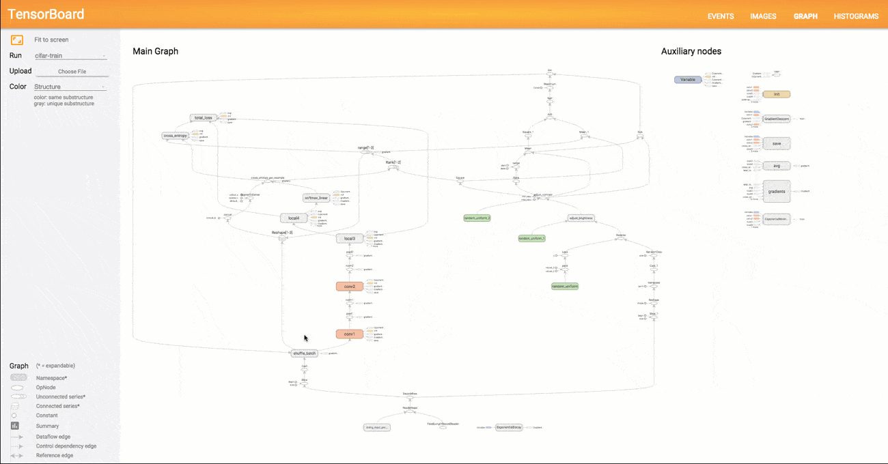

TensorBoard: 图表可视化
TensorFlow 图表计算强大而又复杂，图表可视化在理解和调试时显得非常有帮助。 下面是一个运作时的可式化例子。
 "一个TensorFlow图表的可视化") 一个TensorFlow图表的可视化。
为了显示自己的图表，需将 TensorBoard 指向此工作的日志目录并运行，点击图表顶部窗格的标签页，然后在左上角的菜单中选择合适的运行。想要深入学习关于如何运行 TensorBoard 以及如何保证所有必要信息被记录下来，请查看 Summaries 和 TensorBoard.
名称域（Name scoping）和节点（Node）
典型的 TensorFlow 可以有数以千计的节点，如此多而难以一下全部看到，甚至无法使用标准图表工具来展示。为简单起见，我们为变量名划定范围，并且可视化把该信息用于在图表中的节点上定义一个层级。默认情况下， 只有顶层节点会显示。下面这个例子使用tf.name_scope在hidden命名域下定义了三个操作:
import tensorflow as tf
with tf.name_scope('hidden') as scope:
a = tf.constant(5, name='alpha')
W = tf.Variable(tf.random_uniform([1, 2], -1.0, 1.0), name='weights')
b = tf.Variable(tf.zeros([1]), name='biases')结果是得到了下面三个操作名:
- hidden/alpha
- hidden/weights
- hidden/biases
默认地，三个操作名会折叠为一个节点并标注为hidden。其额外细节并没有丢失，你可以双击，或点击右上方橙色的+来展开节点，然后就会看到三个子节点alpha，weights和biases了。
这有一个生动的例子，例中有一个更复杂的节点，节点处于其初始和展开状态。
顶级名称域的初始视图pool_1，点击右上方橙色的+按钮或双击节点来展开。
|
展开的pool_1名称域视图，点击右上方橙色的-按钮或双击节点来收起此名称域。
|
通过名称域把节点分组来得到可读性高的图表很关键的。如果你在构建一个模型，名称域就可以用来控制可视化结果。你的名称域越好，可视性就越好。
上面的图像例子说明了可视化的另一方面， TensorFlow 图表有两种连接关系：数据依赖和控制依赖。数据依赖显示两个操作之间的tensor流程，用实心箭头指示，而控制依赖用点线表示。在已展开的视图(上面的右图)中，除了用点线连接的CheckNumerics和control_dependency之外，所有连接都是数据依赖的。
还有一种手段用来简化布局。大多数 TensorFlow 图表有一部分节点，这部分节点和其他节点之间有很多连接。比如，许多节点在初始化阶段可能会有一个控制依赖，而绘制所有init节点的边缘和其依赖可能会创造出一个混乱的视图。
为了减少混乱，可视化把所有 high-degree 节点分离到右边的一个从属区域， 而不会绘制线条来表示他们的边缘。线条也不用来表示连接了，我们绘制了小节点图标来指示这些连接关系。分离出从属节点通常不会把关键信息删除掉，因为这些节点和内构功能是相关的。
节点conv_1被连接到save，注意其右边save节点图标。
|
save has a high degree, 并会作为从属节点出现，与conv_1的连接作为一个节点图标显示在其左边。为了继续减少杂乱，既然save有很多连接，我们则只显示前5个，而把其余的缩略为... 12 more。
|
最后一个结构上的简化法叫做序列折叠（series collapsing）。 序列基序（Sequential motifs）是拥有相同结构并且其名称结尾的数字不同的节点，它们被折叠进一个单独的节点块（stack）中。对长序列网络来说，序列折叠极大地简化了视图，对于已层叠的节点，双击会展开序列。
| 一个节点序列的折叠视图。 | 视图的一小块, 双击后展开。 |
最后，针对易读性的最后一点要说到的是，可视化为常节点和摘要节点使用了特别的图标，总结起来有下面这些节点符号：
| 符号 | 意义 |
|---|---|
| High-level节点代表一个名称域，双击则展开一个高层节点。 | |
| 彼此之间不连接的有限个节点序列。 | |
| 彼此之间相连的有限个节点序列。 | |
| 一个单独的操作节点。 | |
 |
一个常量结点。 |
| 一个摘要节点。 | |
| 显示各操作间的数据流边。 | |
| 显示各操作间的控制依赖边。 | |
| 引用边，表示出度操作节点可以使入度tensor发生变化。 |
交互
通过平移和缩放来导航图表，点击和拖动用于平移，滚动手势用于缩放。双击一个节点或点击其+按钮来展开代表一组操作的名称域。右下角有一个小地图可以在缩放和平移时方便的改变当前视角。
要关闭一个打开的节点，再次双击它或点击它的-按钮，你也可以只点击一次来选中一个节点，节点的颜色会加深，并且会看到节点的详情，其连接到的节点会在可视化右上角的详情卡片显现。
详情卡片展示conv2名称域的详细信息，名称域中操作节点的输入和输出被结合在一起，适用于不显示属性的名称域。
|
详情卡片展示DecodeRaw操作节点，除了输入和输出，卡片也会展示与当前节点相关的设备和属性。
|
选择对于 high-degree 节点的理解也很有帮助，选择任意节点，则与它的其余连接相应的节点也会选中，这使得在进行例如查看哪一个节点是否已保存等操作时非常容易。
点击详情卡片中的一个节点名称时会选中该节点，必要的话，视角会自动平移以使该节点可见。
最后，使用图例上方的颜色菜单，你可以给你的图表选择两个颜色方案。默认的结构视图下，当两个 high-level 节点颜色一样时，其会以相同的彩虹色彩出现，而结构唯一的节点颜色是灰色。还有一个视图则展示了不同的操作运行于什么设备之上。名称域被恰当的根据其中的操作节点的设备片件来着色。
下图是一张真实图表的图解：
结构视图：灰色节点的结构是唯一的。橙色的conv1和conv2节点有相同的结构, 其他颜色的节点也类似。
|
设备视图：名称域根据其中的操作节点的设备片件来着色，在此紫色代表GPU，绿色代表CPU。 |
原文: TensorBoard: Graph Visualization 翻译: @Warln 校对: lucky521